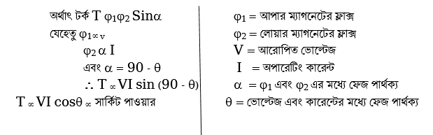

<div class="content">
    <div class="scroller">
        <p class="page-no">183</p><br><br>
        <h2></h2>

        <div>
            <p><b>(গ)	রিভার্স পাওয়ার রিলে (Reverse Power Relay) :</b> রিভার্স পাওয়ার রিলে গঠন অনেকটা ওয়াটমিটারের অভ্যন্তরীণ গঠনের অনুরূপ। ওভারকারেন্ট রিলের সাথে এর ওয়াইন্ডিং এবং সংযোগের ভিন্নতা ব্যতীত তেমন কোনো পার্থক্য নেই। এটি ইন্ডাকশন টাইপ রিলের অন্তর্গত। একটি রিভার্স পাওয়ার রিলের গঠন ও সংযোগ চিত্রে দেখানো হয়েছে। এ রিলের উপওে এবং নিচে দুটি বৈদ্যুতিক চুম্বকের সমন্বয়ে গঠিত। উপরের চুম্বকটি তিন বাহু এবং নিচের চুম্বকটি দুই বাহুবিশিষ্ট। দুই বাহু বিশিষ্ট নিচের চুম্বকের সাথে Plug setting multiplier এর সাহায্যে CT র সাথে Series এ সংযোগ করা হয়। এটি কারেন্ট দ্বারা পরিচালিত হয়। দুই চুম্বকের মাঝে পিভটের সাহায্যে একটি অ্যালুমিনিয়াম ডিস্ক বসানো থাকে। এ ডিস্কের সাথে একটি ধাতবপাত সংযুক্ত থাকে যা প্রয়োজনের সময় ট্রিপ সার্কিটকে সম্পূর্ণ করে দিতে পারে।
                <br>উপরের চুম্বকের কয়েলে ভোল্টেজের আনুপাতিক কারেন্ট এবং নিচের চুম্বকের কয়েলে লাইনের আনুপাতিক কারেন্ট প্রবাহিত হয়। ফলে উভয় চুম্বকের ফ্লাক্স-এর প্রভাবে ডিস্কে টর্ক উৎপন্ন হয়।
            </p>
        </div>
        <p class="c-align">
            
        </p>

        <p class="c-align">
            
        </p>
        <p class="c-align">
            চিত্র-৯.৫ : ইন্ডাকশন টাইপ রিভার্স পাওয়ার রিলে
            <span class="tooltip_my">
                    <i class="fa fa-play-circle video-class" videosrc="videos/183/7.2- Animation Induction Type Reverse Power Relay.mp4" style="font-size: 20px;" aria-hidden="true"></i>
                    <span class="tooltiptext">click here to see the video</span>
            </span>
        </p>
        <p>
            ডিস্কের ঘূর্ণনের দিক প্রবাহিত কারেন্ট এর দিক অনুযায়ী হয়। স্বাভাবিক অবস্থায় উভয় ফ্লাক্সের প্রভাবে সৃষ্ট চাকতিটিকে ট্রিপ কয়েল কন্টাক্ট-এর বিপরীত দিকে ঘুরায়, যাতে সরবরাহ নিরবচ্ছিন্ন থাকে। কিন্তু অস্বাভাবিক অবস্থায় ত্রুটিযুক্ত স্থানে পাওয়ার বিপরীত দিক হতে প্রবেশ করার ফলে চাকতির ঘূর্ণনের দিক পরিবর্তিত হয়ে ট্রিপ কয়েলের কন্টাক্ট সংযোগ করিয়ে তাৎক্ষণিকভাবে সার্কিট ব্রেকারকে ট্রিপ করিয়ে বর্তনীকে সরবরাহ হতে বিচ্ছিন্ন করে। প্রখর অনুভূতিশীল স্প্রিং এর সাহায্যে এ রিলেকে আরো অনুভূতিশীল করা যায়। কারণ, এতে চালক বল (Driving force) প্রবাহিত পাওয়ারের আনুপাতিক হয়। এ প্রকার রিলে, সিনক্রোনাস মেশিন অথবা অনুরূপ যন্ত্রপাতিকে উল্টো দিকের বিদ্যুৎ প্রবাহ হতে রক্ষা করার জন্য ব্যবহার করা হয়। কিন্তু শর্ট সার্কিট অবস্থায় এর ব্যবহার অচল।
        </p>
    </div>
</div>